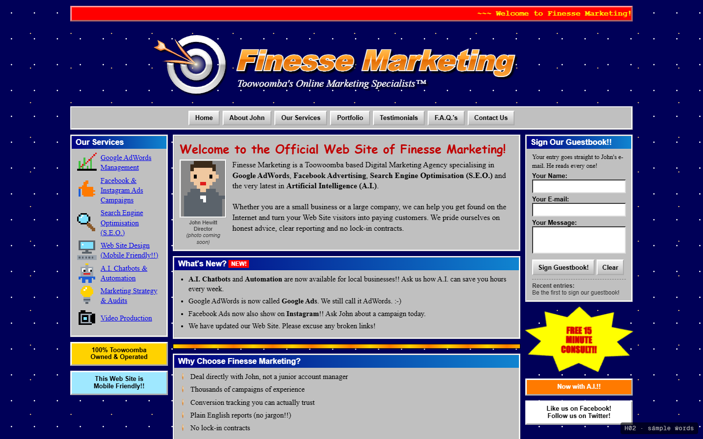
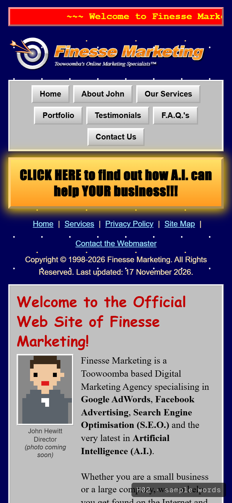

John's pick
Ninety-six
A fake-out. The homepage IS a naff old-style website, written sincerely about today: Google AdWords, Facebook and Instagram ads, A.I. chatbots, a hit counter at 3,814 since November 1998, a guestbook that goes straight to John, pixel clip art and a glossy, deliberately awful logo. Click the logo three times and a corner curls up; grab it and peel the whole page back to reveal the real FM site, where the bullseye lands and the dart game is live.